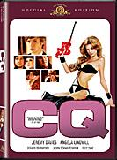
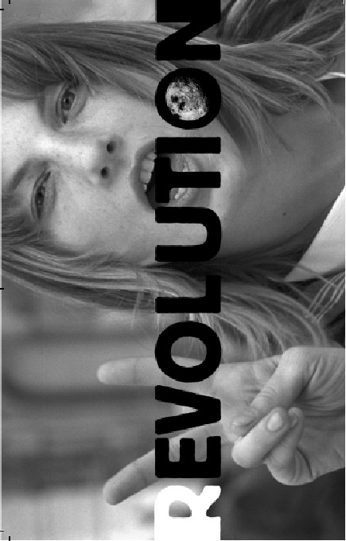

| |
|
|
8. Mai 2006 20:30
CQ (US/Lux 2001)
Erstaunliches Debut/Portrait des Sohnes von Francis Ford Coppola über die geliebte Genre-Filmwelt anhand eines Filmprojektes a la Roger Corman, bei dem er plötzlich die Regie übernehmen kann. Wir begeben uns auf die Suche nach einen gutem Ende für den Film im Film. Für mich persönlich ist Roman sogar talentierter als die berühmte Schwester Sofia. - Reini Urban
 Paris, 1969. The filming of a sci-fi movie set in the distant year 2001 is in trouble. The director's obsession with the actress who plays the sexy secret agent Dragonfly (Angela Lindvall) has clouded his judgment and the film has no ending. A young American (Jeremy Davies), in Paris to document his life on film with total honesty, is brought in to finish the movie with a bang. This proves to be difficult when the line between his fantasy life and reality becomes blurred, and he too finds himself seduced by the charms of Dragonfly.
"I love this film! - Harry Knowles, Ain't it cool news
"This film is entertaining, thoughtful and beautifully photographed, It cleverly mixes documentary with the real lives of it's characters giving a new twist to the "story within a story" genre. Every actor gives an honest performance in a story that could have easily slipped into the same old tortured artist crap that seems so popular in film today. The soundtrack is very much a part of the story in that it represents the era in which the film is set and the style in which the film within the film is set. Roman Coppola may be Francis' son but he is not a copycat." - Edgar L. Davis
 "Director Roman Coppola comes out from behind the shadow of his father (Francis Ford) to make a very impressive directorial debut. While he may have had the initial family connections in the business, he certainly has the talent to back it up. His early work with music videos showed a lot of promise from the aspiring director.
This ultra-cool "film within a film" is quite unlike anything else out there right now. While it may not translate to some of the multiplex crowd, there are plenty of people who will latch onto it for its style and substance. It also serves as a campy homage to cheesy 60s sci-fi. In fact, the movie that they're working on in the film ("Dragonfly") looks like something that would be seen on a re-run of "Mystery Science Theater". The attention to detail looks great and most of the film looks like it was shot around the same time as "Barbarella" (in fact, John Phillip Law even has a cool part in it).
A director friend of mine saw this with me and pointed out the plot point accuracy of a director trying to hold together a relationship while filming a movie and being completely consumed with it. While this is maybe something that Coppola hasn't had to deal with himself, it certainly seemed very honest and that's why this works. The characters are likeable and the story is quite good. Backed up with great visual effects and an excellent soundtrack, this one's a winner." - paul_supercala, imdb
US/Lux 2001, B+R: Roman Coppola, D: Jeremy Davies, Angela Lindvall, Élodie
Bouchez, Jason Schwartzman, Billy Zane, John Phillip Law, Dean
Stockwell, Gérard Depardieu, Giancarlo Giannini, Sofia Coppola.
88min, eng.OF, Ö Premiere
20:30 Uhr (!), Space04 Kunsthaus Graz, 5€